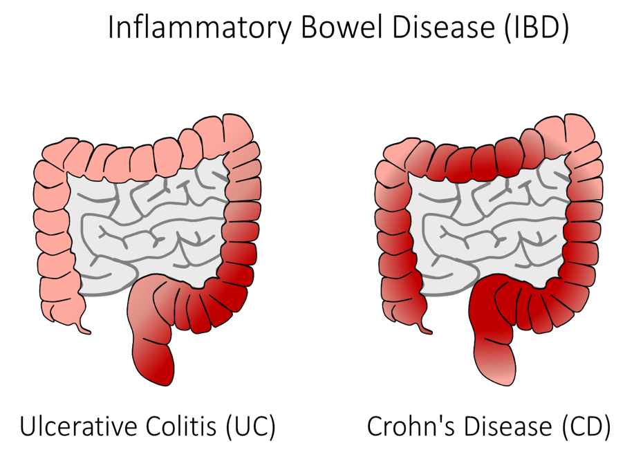

Inflammatory Bowel Diseases
Inflammatory bowel disease causes inflammation of the lining and deeper tissues of the digestive tract.
Examples of chronic inflammatory bowel diseases include:
Crohn’s Disease #
Chrohn’s disease occurs when your body's immune system mistakenly attacks and destroys healthy tissue in the body. It can occur anywhere throughout the GI tract. It commonly involves the thickness of the walls in the lower part of the digestive system, however, it can present “patchy” and be scattered throughout the GI tract. The exact cause of Crohn’s disease is unknown.
Ulcerative Colitis #
Ulcerative colitis is usually in one location, and does not skip areas. It starts at the rectum and expands up and throughout the colon. Ulcerative colitis does not affect other organs in the digestive tract. The exact cause of ulcerative colitis is unknown.
Symptoms may include: diarrhea, fever and weakness, abdominal pain, bloating and cramping, blood in stool, unexplainable weight loss.
When diagnosing inflammatory bowel diseases, we will start with obtaining family history and blood or stool testing. A colonoscopy or endoscopy (or at times both), are helpful indicators to be able to check if there is inflammation.